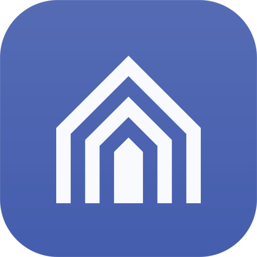

Logo
The mark has to say three things at once — a home, a process that keeps going, and progress you can see — and still hold at 16 px as a single ink. Five directions follow, each tested on the same ladder (16 · 20 · 32 · 64 · 160), in light, dark, on the primary tile and as one-colour ink. One is recommended and specified.
Five directions
Each card: size ladder (hinted grid under 20 px), lockups in Geist, app tile on primary, one-colour stamps and the real 16 px pixels.
How they compare
Scored 1–5 from the renders above. Echo Roof is the only direction without a weak column.
Echo Roof
Three nested gables with the same stroke and the same gap, ending on one baseline. The outer rings are the stages you have finished, the solid door is the step you are standing on — a roofline that keeps echoing as the run progresses.
Why it wins
- 01Reads as home and as process. A pitched roof is unmistakably property; the repeated, evenly spaced outline is a run advancing stage by stage.
- 02Strong at 16 px. Outer ring, gap, solid door: three clean vertical bands in 14 px, every edge on a pixel.
- 03One idea, one rule. Stroke = gap = 2, roofs at 45°, door = 4. No letterform, check, node graph or gradient.
- 04Built to move. Door rises, rings draw outward: a 0.92 s assemble for the login hero and a calm inside-out pulse for loading.
How it differs
Process Street: a check in a rounded form. Linear: a ring of bars. Notion: cube + letter. Asana: three dots. Zapier: asterisk. n8n: connected nodes. Buildium / AppFolio: letterforms. Echo Roof has no letter, no check, no dot cluster — its nearest relatives are generic arch and wi-fi glyphs, which lack the 45° gable and the solid door.
Construction
- Master grid
24 × 24, mark in a20 × 20keyline (2 px margin); the apex tip overshoots the top line by 0.4- Rhythm
2·2·2·2·4·2·2·2·2— stroke, gap, stroke, gap, door, gap, stroke, gap, stroke (px at 24)- Stroke
2, butt caps flush with the baseline, miter joins (crisp apex, no rounding)- Roof pitch
45°on all layers; layers are true offsets (4horizontal,4√2 ≈ 5.66vertical)- Door
- Solid,
4wide, 45° gable top; always the innermost layer - Hinted grids
16(favicon, tabs, 14–18 px),20(sidebar),24master (≥ 24 px). Never scale the master below 20 px.- Colour
- Ink =
currentColor. Brand:--primary(light#445dad, dark#8aa8f7). On the tile:--primary-foreground. - Optical
- Visual centre ≈
y 11.8: the apex is a point and the feet are flat, so the box is nudged 0.2 up.
Hinted sizes — pixels, not promises
Lockups
Clear space & minimum size
Do / Don't
Motion
Reduced motion
Under prefers-reduced-motion: reduce (or the “Reduced” switch above) every animation is removed and the finished mark is shown. The keyframes only change stroke-dashoffset, opacity and a scaleY from the baseline, so the resting state is always the complete logo. Switch to “Reduced” and press Replay to check.
Where it lives
Sidebar header (20 grid), browser tab (16 grid) and the app icon, in both themes.
Assets — logo/
Hand-written SVG, no editor metadata. Favicon, app icon and lockup below are the real files; single-colour files inherit currentColor when inlined.
| File | Use | Notes | |
|---|---|---|---|
mark.svg | Default mark, ≥ 24 px | 24 grid · currentColor · 2 px padding built in | |
mark-16.svg | 14–18 px: tabs, inline, menus | 16 grid · every edge pixel-aligned · currentColor | |
mark-20.svg | 19–23 px: sidebar header | 20 grid · currentColor | |
 | app-icon.svg | PWA / home-screen / avatar | 512 · primary tile · mark at 56 % · maskable-safe |
favicon.svg | <link rel="icon"> | 16 grid · light/dark colours via prefers-color-scheme inside the SVG | |
lockup.svg | Mark + “Property Workflows” | currentColor · Geist 600 <text>; in-app, use the HTML lockup |